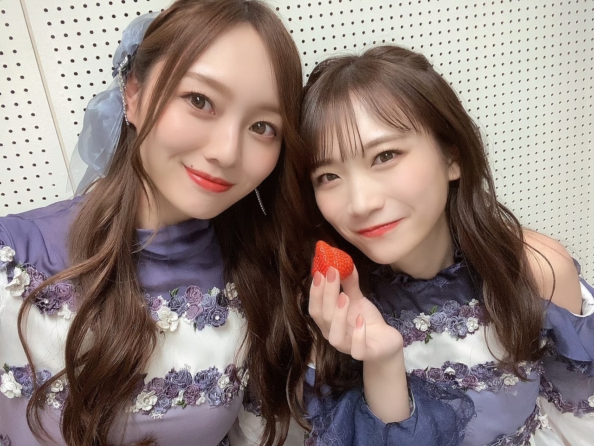

冬は、越せそうですか？１２月は越せましたか？
本日誕生日を迎えまして、
２４歳になりました〜！
"見た目は２４歳、中身は１８歳の
逆コナンこと 梅澤美波です"
なんて 頑張って練った自己紹介にも
追いついちゃいました

２４かあ〜
私の周りには
お手本になるような大人の方がたくさんいます。
日々、色んな出会いがあります。
話していたり 様子を見ていたりする中で、
その人の発する言葉や 誰かを想いやる気持ちから生まれる行動を目にし、
どんどん理想像が生まれてくるわけですが
中々自分で取り入れるのって難しかったりもして。
自分は自分でしかないんだなぁと思ったりします。
出来たとしても、
なんかかっこよく決まらない！
自分らしく生きるのが一番なのかなあ なんて
思ったりもするわけです、難しい！
かわいいみんな〜

だいすきキャプ
ある程度、なにを言われても
受け入れられる器にもなってきたので
心は成長していくんだなあと実感してます。
まだまだ強くなる必要があるし、
自分の得意ではない所へ踏み出さなきゃいけないこともきっとあるし、
そうじゃなくても 自分を明るく保つべきときも
もっと増えてくるだろうし
今年もきっと
いろんなことで涙を流す瞬間とか
怒りとか悲しみとか
とてつもない喜びとか
感情がごっちゃごちゃになるんだろうなあと
思ったりするけど
それもまた楽しみで、
そんなときに 押さえ込みすぎずに
きちんと意思表示できる人でありたいなあと思うし
そんな感情と直面したとき
そばに居てくれる人を大切にしていきたいなあと思います
とにかくまだまだやりたいことたくさんだし
挑戦したいこと、飛び込みたい場所、
いっぱいあるので！
たくさん色んな姿、見てもらえますように。
これ、たしか１７歳！
基本、冷静に強くいるので
私を好きでいてくれる皆様だけは
どうかたくさん甘やかしてください(^^)
甘々でお願いします(^^)
基本ちゃんとするから、
私を好きでいてくれるあなたは、甘やかして(^^)（笑）
きつね！
いつも本当にありがとうございます！
今年もどうか、よろしくお願い致します。
また、書きます〜
Original：https://www.nogizaka46.com/s/n46/diary/detail/101040?ima=4932&cd=MEMBER